Năm học 2026–2027 · Học kỳ 1
Trường Đại học Công nghệ · Đại học Quốc gia Hà Nội
Quyết định khi môi trường thay đổi và kết quả chưa chắc chắn.
Tương tác, phần thưởng, chính sách và hàm giá trị.
Tic-tac-toe, câu hỏi ôn tập và thảo luận.
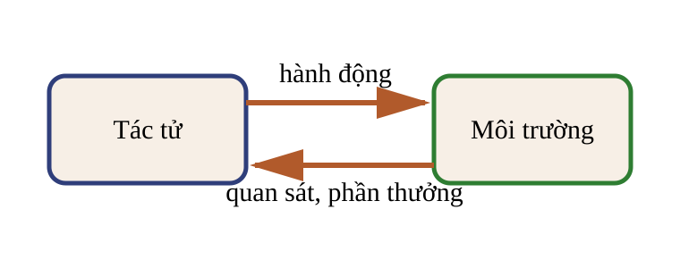
Nhận quan sát và chọn hành động có thể thực hiện.
Tiếp nhận hành động, chuyển trạng thái và trả về quan sát cùng phần thưởng.
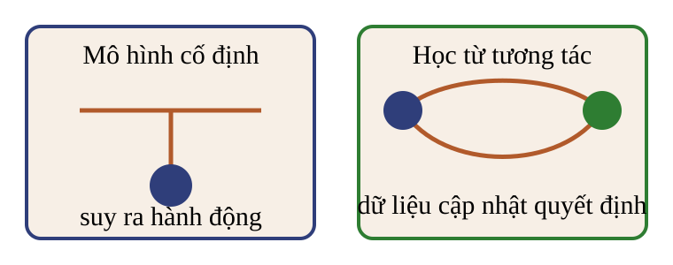
Đồ đạc di chuyển làm mô hình nhà cũ không còn đủ.
Số trạng thái và chuỗi hành động tăng nhanh.
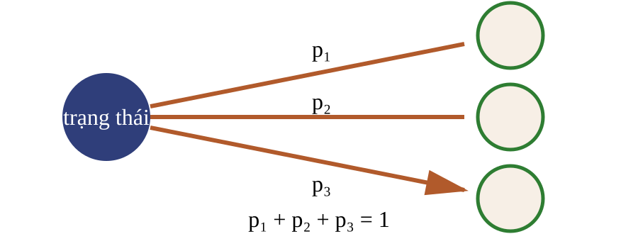
Chọn nước đi trong không gian tìm kiếm lớn.
Học cách đánh giá nước đi, rồi kết hợp với tìm kiếm cây.
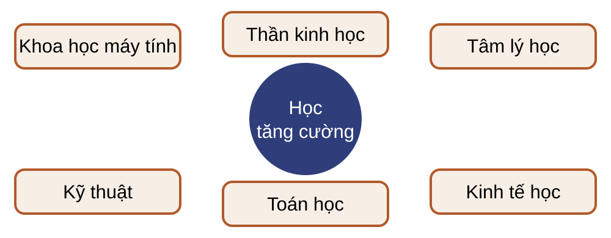
Học tăng cường nghiên cứu cách tác tử chọn hành động để tối đa hóa phần thưởng tích lũy kỳ vọng.
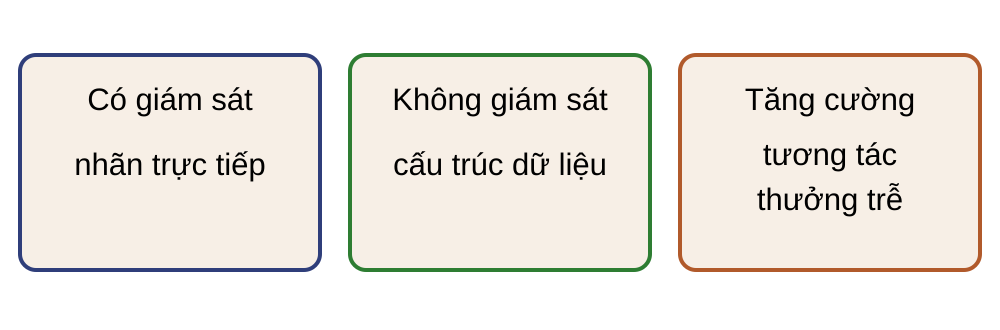
Mỗi mẫu huấn luyện đi kèm tín hiệu mục tiêu trực tiếp.
Dữ liệu không kèm nhãn mục tiêu cho từng mẫu. Thuật toán tìm cấu trúc hoặc biểu diễn trong dữ liệu.
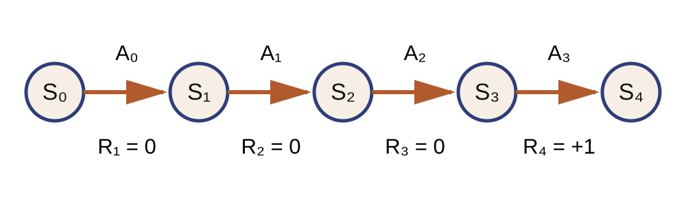
Với $t=0,\ldots,T-1$, môi trường trả $R_{t+1}\in\mathbb R$ sau hành động $A_t$.
$R_{t+1}$ đánh giá chuyển tiếp vừa xảy ra.
$A_t$ còn ảnh hưởng các phần thưởng sau $R_{t+1}$.
Với $T=4$ trên hình trước, $G_0=R_1+R_2+R_3+R_4=0+0+0+1=1$.
Một bài toán phù hợp với giả thuyết này khi mục tiêu có thể mô hình hóa bằng cực đại hóa kỳ vọng của $G_t$.
Thắng, hòa hoặc thua ở cuối ván.
Thưởng khi giao đúng; phạt khi làm rơi hoặc va chạm.
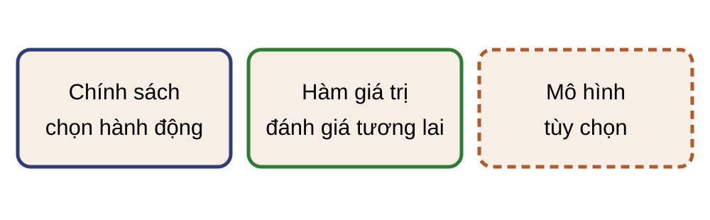
$\pi(a\mid h_t)$ là phân phối chọn hành động; chính sách có thể ngẫu nhiên.
$V^\pi(h_t)=\mathbb E_\pi[G_t\mid H_t=h_t]$.
Mô hình dự báo quan sát hoặc trạng thái kế tiếp và phần thưởng sau một hành động.
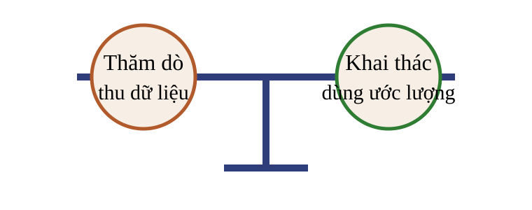
Tác tử thử hành động để giảm bất định về hậu quả hoặc giá trị của lựa chọn.
Tác tử chọn hành động đang được đánh giá tốt nhất theo kinh nghiệm hiện có.
Ví dụ giả định: một tác tử đã thử hai hành động.
| Hành động | Số lần thử | Phần thưởng trung bình |
|---|---|---|
| A | 20 | 0,60 |
| B | 2 | 0,55 |
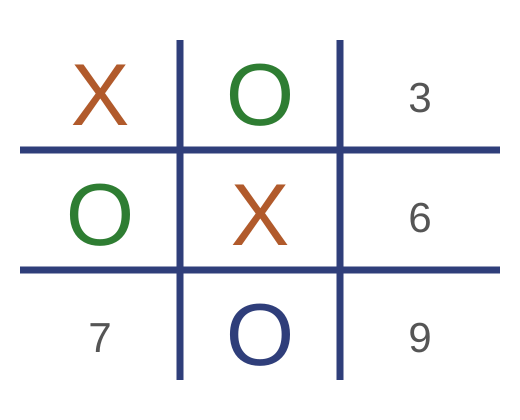
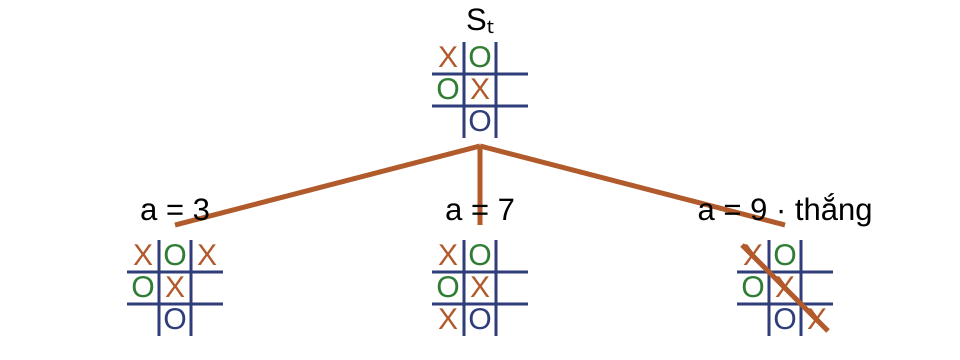
Cấu hình bàn cờ và lượt chơi tại bước $t$.
$A_t\in\mathcal A(S_t)$, với $\mathcal A(S_t)$ là tập ô trống.
Theo góc nhìn tác tử: $+1$ thắng; $-1$ thua; $0$ nếu hòa hoặc chưa kết thúc.
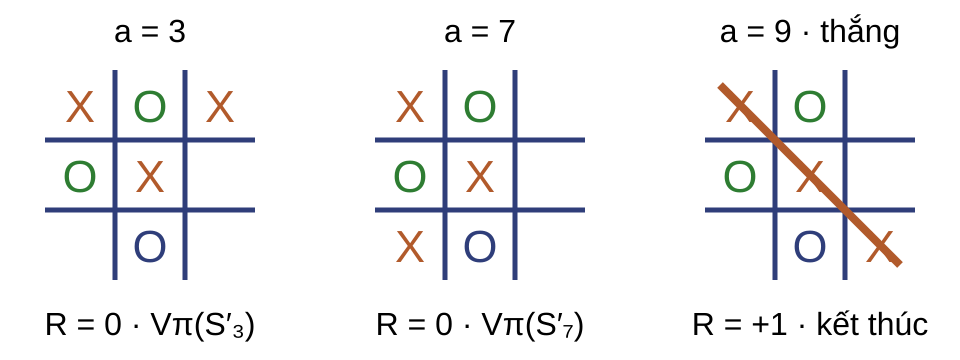
Phụ lục thông tin nguồn: nhấn ↓
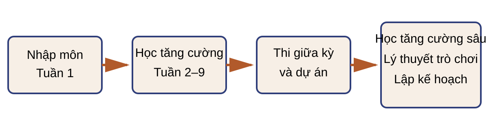
15 tuần: nhập môn; Học tăng cường; giữa kỳ và dự án; Học tăng cường sâu, trò chơi và lập kế hoạch.
Sutton & Barto (2018); bài giảng David Silver; tài liệu bổ sung theo tuần.